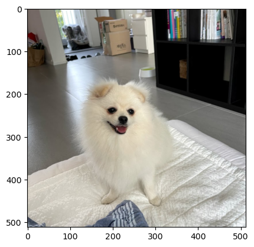
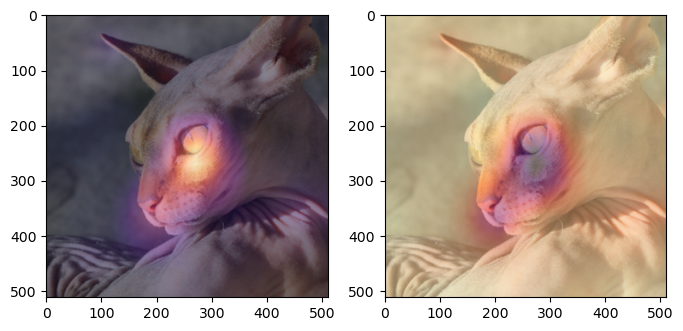
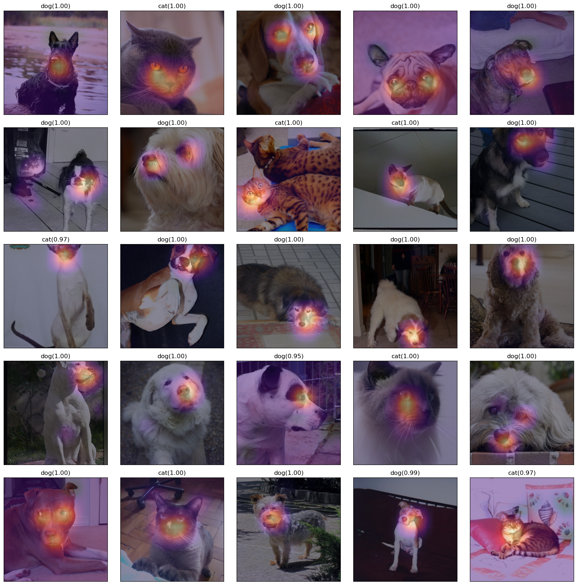
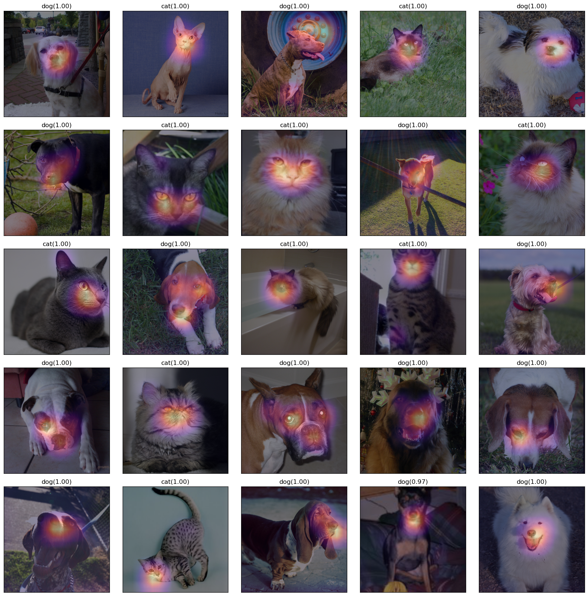
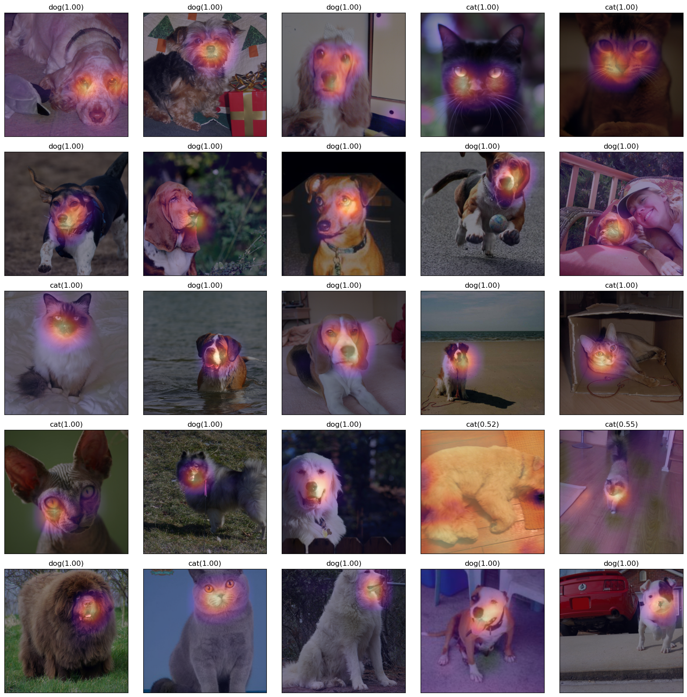

#{{<video https://youtu.be/playlist?list=PLQqh36zP38-wTzMRmZzvr2TL12DNo6jXF&si=RnG6_-uhn9Yb57nU >}}07wk-1,2: 합성곱신경망 (3) – XAI (Class Activation Map, CAM)

1. 강의영상
2. Imports
import torch
import torchvision
import fastai.vision.all
import matplotlib.pyplot as plt
import requests3. XAI란?
4. CAM의 구현을 위한 예비학습
A. DLS
path = fastai.data.external.untar_data(fastai.data.external.URLs.PETS)
#path.ls()
(path/'images').ls()(#7393) [Path('/root/.fastai/data/oxford-iiit-pet/images/Sphynx_14.jpg'),Path('/root/.fastai/data/oxford-iiit-pet/images/american_bulldog_224.jpg'),Path('/root/.fastai/data/oxford-iiit-pet/images/chihuahua_133.jpg'),Path('/root/.fastai/data/oxford-iiit-pet/images/Bombay_122.jpg'),Path('/root/.fastai/data/oxford-iiit-pet/images/english_setter_153.jpg'),Path('/root/.fastai/data/oxford-iiit-pet/images/Ragdoll_188.jpg'),Path('/root/.fastai/data/oxford-iiit-pet/images/newfoundland_125.jpg'),Path('/root/.fastai/data/oxford-iiit-pet/images/Bombay_156.jpg'),Path('/root/.fastai/data/oxford-iiit-pet/images/keeshond_122.jpg'),Path('/root/.fastai/data/oxford-iiit-pet/images/Birman_115.jpg')...](path/'images').ls()[214],(path/'images').ls()[448],(path/'images').ls()[2976](Path('/root/.fastai/data/oxford-iiit-pet/images/Abyssinian_101.mat'),
Path('/root/.fastai/data/oxford-iiit-pet/images/Abyssinian_100.mat'),
Path('/root/.fastai/data/oxford-iiit-pet/images/Abyssinian_102.mat'))fnames = fastai.data.transforms.get_image_files(path/'images')
#fnames = [l for l in (path/'images').ls() if str(l).split('.')[-1] == 'jpg']def label_func(fname):
if fname[0].isupper():
return 'cat'
else:
return 'dog'dls = fastai.vision.data.ImageDataLoaders.from_name_func(
path = path/'images',
fnames = fnames,
label_func = label_func,
item_tfms = fastai.vision.augment.Resize(512),
bs = 32 # batch_size = 32
)dls.show_batch()
B. 이미지 자료 불러오기
- 원래 우리가 아는 방법: path를 의미하는 string \(\to\) torch.tensor
x = torchvision.io.read_image('/root/.fastai/data/oxford-iiit-pet/images/Sphynx_14.jpg')
print(f"type: {type(x)}")
print(f"shape: {x.shape}")
print(f"dtype: {x.dtype}")type: <class 'torch.Tensor'>
shape: torch.Size([3, 333, 500])
dtype: torch.uint8- fastai를 이용하는 방법: path를 의미하는 string \(\to\) PILImage \(\to\) fastai.torch_core.TensorImage \(\to\) torch.tensor
x_pil = fastai.vision.core.PILImage.create('/root/.fastai/data/oxford-iiit-pet/images/Sphynx_14.jpg')
x = next(iter(dls.test_dl([x_pil])))[0]
print(f"type: {type(x)}")
print(f"shape: {x.shape}")
print(f"dtype: {x.dtype}")
# print('---')
# x = torch.tensor(x)
# print(f"type: {type(x)}")
# print(f"shape: {x.shape}")
# print(f"dtype: {x.dtype}")type: <class 'fastai.torch_core.TensorImage'>
shape: torch.Size([1, 3, 512, 512])
dtype: torch.float32x_pil = fastai.vision.core.PILImage.create(requests.get('https://github.com/guebin/DL2024/blob/main/imgs/01wk-hani1.jpeg?raw=true').content)
x = next(iter(dls.test_dl([x_pil])))[0]
print(f"type: {type(x)}")
print(f"shape: {x.shape}")
print(f"dtype: {x.dtype}")type: <class 'fastai.torch_core.TensorImage'>
shape: torch.Size([1, 3, 512, 512])
dtype: torch.float32- 참고로 아래와 같이 이미지변환할 수도 있음.
x_pil = fastai.vision.core.PILImage.create('/root/.fastai/data/oxford-iiit-pet/images/Sphynx_14.jpg')
#x = next(iter(dls.test_dl([x_pil])))[0]
x = fastai.torch_core.TensorImage(x_pil)
print(f"type: {type(x)}")
print(f"shape: {x.shape}")
print(f"dtype: {x.dtype}")type: <class 'fastai.torch_core.TensorImage'>
shape: torch.Size([333, 500, 3])
dtype: torch.uint8C. 이미지 자료 시각화
x_pil = fastai.vision.core.PILImage.create('/root/.fastai/data/oxford-iiit-pet/images/Sphynx_14.jpg')
x = next(iter(dls.test_dl([x_pil])))[0] # lrnr를 학습이후에는 여기에 저장되는 x값이 조금 달라지게됨
x_dec = dls.decode([x])
plt.imshow(torch.einsum('ocij -> ijc', x_dec))
x_pil = fastai.vision.core.PILImage.create(requests.get('https://github.com/guebin/DL2024/blob/main/imgs/01wk-hani1.jpeg?raw=true').content)
x = next(iter(dls.test_dl([x_pil])))[0] # lrnr를 학습이후에는 여기에 저장되는 x값이 조금 달라지게됨
x_dec = dls.decode([x])
plt.imshow(torch.einsum('ocij -> ijc', x_dec))
D. AP layer
ap = torch.nn.AdaptiveAvgPool2d(output_size=1)
apAdaptiveAvgPool2d(output_size=1)X = torch.arange(1*3*4*4).reshape(1,3,4,4)*1.0
Xtensor([[[[ 0., 1., 2., 3.],
[ 4., 5., 6., 7.],
[ 8., 9., 10., 11.],
[12., 13., 14., 15.]],
[[16., 17., 18., 19.],
[20., 21., 22., 23.],
[24., 25., 26., 27.],
[28., 29., 30., 31.]],
[[32., 33., 34., 35.],
[36., 37., 38., 39.],
[40., 41., 42., 43.],
[44., 45., 46., 47.]]]])ap(X) # 채널별로 평균을 구해줌. tensor([[[[ 7.5000]],
[[23.5000]],
[[39.5000]]]])r,g,b = X[0]r.mean(), g.mean(), b.mean()(tensor(7.5000), tensor(23.5000), tensor(39.5000))ap(r), ap(g), ap(b) (tensor([[7.5000]]), tensor([[23.5000]]), tensor([[39.5000]]))E. AP, Linear의 교환
- 신기한 거 보여줄까요??
ap(r)*0.1 + ap(g)*0.2 + ap(b)*0.3tensor([[17.3000]])ap(r*0.1 + g*0.2 + b*0.3)tensor([[17.3000]])- 별로 안 신기함.. 당연한것 아니야?
- torch.nn.Linear() 와 torch.nn.Flatten() 를 이용한 구현
flatten = torch.nn.Flatten()
l = torch.nn.Linear(3,1,bias=False)# ap(r)*0.1 + ap(g)*0.2 + ap(b)*0.3
l.weight.data = torch.tensor([[0.1, 0.2, 0.3]])
l(flatten(ap(X)))tensor([[17.3000]], grad_fn=<MmBackward0>)#ap(r*0.1 + g*0.2 + b*0.3) ## 각각의 픽셀에 l을 취하고 그 결과에 ap를 취해야함
flatten(ap(torch.einsum('ocij,kc -> okij',X,l.weight.data)))tensor([[17.3000]])- 정리
# 계산1: x를 ap, flatten, linear 순서로 적용
print(f"{X.shape} -- X")
print(f"{ap(X).shape} -- ap(X)")
print(f"{flatten(ap(X)).shape} -- flatten(ap(X))")
print(f"{l(flatten(ap(X))).shape} -- l(flatten(ap(X)))")torch.Size([1, 3, 4, 4]) -- X
torch.Size([1, 3, 1, 1]) -- ap(X)
torch.Size([1, 3]) -- flatten(ap(X))
torch.Size([1, 1]) -- l(flatten(ap(X)))# 계산2: x를 linear, ap, flatten 순서로 적용
print(f"{X.shape} -- X")
print(f"{torch.einsum('ocij,kc -> okij',X,l.weight.data).shape} -- l(X)")
print(f"{ap(torch.einsum('ocij,kc -> okij',X,l.weight.data)).shape} -- ap(l(X))")
print(f"{flatten(ap(torch.einsum('ocij,kc -> okij',X,l.weight.data))).shape} -- flatten(ap(l(X)))")torch.Size([1, 3, 4, 4]) -- X
torch.Size([1, 1, 4, 4]) -- l(X)
torch.Size([1, 1, 1, 1]) -- ap(l(X))
torch.Size([1, 1]) -- flatten(ap(l(X)))\[\underset{(n,3,4,4)}{\boldsymbol X} \overset{ap}{\to} \underset{(n,3,1,1)}{{\boldsymbol \sharp}}\overset{flatten}{\to} \underset{(n,3)}{{\boldsymbol \sharp}}\overset{linear}{\to} \underset{(n,1)}{\hat{\boldsymbol y}} = [[17.3],...]\]
\[\underset{(n,3,4,4)}{\boldsymbol X} \overset{linear}{\to} \underset{(n,1,4,4)}{{\boldsymbol \sharp}}\overset{ap}{\to} \underset{(n,1,1,1)}{{\boldsymbol \sharp}}\overset{flatten}{\to} \underset{(n,1)}{\hat{\boldsymbol y}} = [[17.3],...]\]
5. CAM(Zhou et al. 2016)의 구현
Zhou, Bolei, Aditya Khosla, Agata Lapedriza, Aude Oliva, and Antonio Torralba. 2016. “Learning Deep Features for Discriminative Localization.” In Proceedings of the IEEE Conference on Computer Vision and Pattern Recognition, 2921–29.
ref: https://arxiv.org/abs/1512.04150
- 이 강의노트는 위의 논문의 내용을 재구성하였음.
- 논문의 수식을 이해해서 코드로 재구성하는 능력이 새로운 방법을 빠르게 습득할 수 있도록 해줌.
- 학기 끝나고 “논문->코드”로 만드는 과정을 연습하면 대학원등에서 공부할때 도움이 될 것 같음.
A. 1단계 – 이미지분류 잘하는 네트워크 선택 후 학습
lrnr = fastai.vision.learner.vision_learner(
dls = dls,
arch = fastai.vision.models.resnet34,
metrics = [fastai.metrics.accuracy]
) lrnr.fine_tune(1)| epoch | train_loss | valid_loss | accuracy | time |
|---|---|---|---|---|
| 0 | 0.101094 | 0.035343 | 0.989851 | 00:20 |
| epoch | train_loss | valid_loss | accuracy | time |
|---|---|---|---|---|
| 0 | 0.068278 | 0.004763 | 0.997970 | 00:26 |
B. 2단계– 네트워크의 끝 부분 수정하고 재학습
- 일반적으로 CNN계열은 2D-part와 1D-part로 구분되어있음.
net1 = lrnr.model[0] # 2d-part
net2 = lrnr.model[1] # 1d-part # 하나의 배치를 테스트용으로 임시로 가져옴
_X, _y = dls.one_batch()
_X.shape,_y.shape (torch.Size([32, 3, 512, 512]), torch.Size([32]))print(f"입력이미지:\t\t {_X.shape}")
print(f"net1통과직후:\t\t {net1(_X).shape}")
print(f"net2의AP까지통과직후:\t {net2[0](net1(_X)).shape}")
print(f"net2의Flatten까지통과직후:\t {net2[1](net2[0](net1(_X))).shape}")
print(f"net2끝까지통과:\t\t {net2(net1(_X)).shape}")입력이미지: torch.Size([32, 3, 512, 512])
net1통과직후: torch.Size([32, 512, 16, 16])
net2의AP까지통과직후: torch.Size([32, 1024, 1, 1])
net2의Flatten까지통과직후: torch.Size([32, 1024])
net2끝까지통과: torch.Size([32, 2])- net2를 아래와 같이 수정하자. (왜??)
net2 = torch.nn.Sequential(
torch.nn.AdaptiveAvgPool2d(output_size=1), # [n, 512, 16, 16] --> [n, 512, 1, 1]
torch.nn.Flatten(), # [n, 512, 1, 1] --> [n, 512]
torch.nn.Linear(512,2,bias=False) # [n,512] --> [n,2]
)net = torch.nn.Sequential(
net1, # 원래 resnet34에 있던거..
net2 # 내가 (CAM을 위해서) 마음대로 바꾼것..
)lrnr2 = fastai.learner.Learner(
dls = dls,
model = net,
metrics = [fastai.metrics.accuracy]
) lrnr.loss_func, lrnr2.loss_func # loss_fn 은 따로 정의안했는데 알아서 잘 들어가 있음(FlattenedLoss of CrossEntropyLoss(), FlattenedLoss of CrossEntropyLoss())lrnr2.fine_tune(5) # net2를 내마음대로 수정했고, 그것에 대한 패널티로 accuracy가 안좋아짐! 그렇지만 그런대로 쓸만함. | epoch | train_loss | valid_loss | accuracy | time |
|---|---|---|---|---|
| 0 | 0.323613 | 1.646134 | 0.705007 | 00:26 |
| epoch | train_loss | valid_loss | accuracy | time |
|---|---|---|---|---|
| 0 | 0.166095 | 0.257160 | 0.905954 | 00:26 |
| 1 | 0.160385 | 0.132229 | 0.953315 | 00:26 |
| 2 | 0.106043 | 0.093649 | 0.962111 | 00:26 |
| 3 | 0.050350 | 0.056827 | 0.979702 | 00:26 |
| 4 | 0.029413 | 0.058543 | 0.981732 | 00:26 |
C. 3단계– 수정된 net2에서 Linear와 AP의 순서를 바꿈
- 1개의 observation을 고정
x_pil = fastai.vision.core.PILImage.create('/root/.fastai/data/oxford-iiit-pet/images/Sphynx_14.jpg')
x = next(iter(dls.test_dl([x_pil])))[0]
x_dec = dls.decode([x])[0]
plt.imshow(torch.einsum('ocij -> ijc', x_dec))
- 하나의 observation이 yhat까지 나오는 과정
# 계산방식1: 원래계산방식
ap = lrnr2.model[-1][0]
fl = lrnr2.model[-1][1]
l = lrnr2.model[-1][2]
print(f"{x.shape} -- x")
print(f"{net1(x).shape} -- net1(x)")
print(f"{ap(net1(x)).shape} -- ap(net1(x))")
print(f"{fl(ap(net1(x))).shape} -- flatten(ap(net1(x)))")
print(f"{l(fl(ap(net1(x)))).shape} -- l(flatten(ap(net1(x))))")
l(fl(ap(net1(x))))torch.Size([1, 3, 512, 512]) -- x
torch.Size([1, 512, 16, 16]) -- net1(x)
torch.Size([1, 512, 1, 1]) -- ap(net1(x))
torch.Size([1, 512]) -- flatten(ap(net1(x)))
torch.Size([1, 2]) -- l(flatten(ap(net1(x))))TensorImage([[ 2.7846, -2.7945]], device='cuda:0', grad_fn=<AliasBackward0>)net2의 순서 바꾸기 전 전체 네트워크 \[\underset{(1,3,512,512)}{\boldsymbol x} \overset{net_1}{\to} \left( \underset{(1,512,16,16)}{\tilde{\boldsymbol x}} \overset{ap}{\to} \underset{(1,512,1,1)}{{\boldsymbol \sharp}}\overset{flatten}{\to} \underset{(1,512)}{{\boldsymbol \sharp}}\overset{linear}{\to} \underset{(1,2)}{\hat{\boldsymbol y}}\right) = [[2.7846, -2.7945]]\]
# 계산방식2: net2의 순서를 바꾼 계산
ap = lrnr2.model[-1][0]
fl = lrnr2.model[-1][1]
l = lrnr2.model[-1][2]
WHY = torch.einsum('ocij,kc -> okij', net1(x), l.weight.data)
print(f"{x.shape} -- x")
print(f"{net1(x).shape} -- net1(x)")
print(f"{WHY.shape} -- l(net1(x)):=WHY")
print(f"{ap(WHY).shape} -- ap(l(net1(x)))=ap(WHY)")
print(f"{fl(ap(WHY)).shape} -- flatten(ap(l(net1(x)))))=flatten(ap(WHY))")
fl(ap(torch.einsum('ocij,kc -> okij', net1(x), l.weight.data)))torch.Size([1, 3, 512, 512]) -- x
torch.Size([1, 512, 16, 16]) -- net1(x)
torch.Size([1, 2, 16, 16]) -- l(net1(x)):=WHY
torch.Size([1, 2, 1, 1]) -- ap(l(net1(x)))=ap(WHY)
torch.Size([1, 2]) -- flatten(ap(l(net1(x)))))=flatten(ap(WHY))TensorImage([[ 2.7846, -2.7945]], device='cuda:0', grad_fn=<AliasBackward0>)net2의 순서를 바꾼후 전체 네트워크 \[\underset{(1,3,224,224)}{\boldsymbol x} \overset{net_1}{\to} \left( \underset{(1,512,16,16)}{\tilde{\boldsymbol x}} \overset{linear}{\to} \underset{(1,2,16,16)}{{\bf WHY}}\overset{ap}{\to} \underset{(1,2,1,1)}{{\boldsymbol \sharp}}\overset{flatten}{\to} \underset{(1,2)}{\hat{\boldsymbol y}}\right) = [[2.7846,-2.7945]]\]
- 참고: 여기에서 linear는 (1,512,16,16)의 each pixel에
torch.nn.Linear(512,2)를 수행함.
\(\star\) 잠깐 멈추고 생각 좀 해보자..
- 입력이미지
x_pil, x(PILImage mode=RGB size=500x333,
TensorImage([[[[ 0.8104, 0.7933, 0.7762, ..., -0.6794, -0.6794, -0.6794],
[ 0.8104, 0.7933, 0.7762, ..., -0.6965, -0.6965, -0.6965],
[ 0.8104, 0.7933, 0.7762, ..., -0.7137, -0.7137, -0.7137],
...,
[-0.6623, -0.2171, 0.3138, ..., 0.5707, 0.5364, 0.5022],
[-0.7650, -0.3541, 0.1597, ..., 0.5707, 0.5193, 0.4851],
[-0.8335, -0.4568, 0.0398, ..., 0.5707, 0.5193, 0.4679]],
[[ 0.9930, 0.9755, 0.9580, ..., -0.5301, -0.5126, -0.4951],
[ 0.9930, 0.9755, 0.9580, ..., -0.5301, -0.5126, -0.4951],
[ 1.0105, 0.9930, 0.9580, ..., -0.5126, -0.4951, -0.4951],
...,
[-1.0553, -0.5301, 0.1527, ..., -0.0399, 0.0126, 0.0476],
[-1.1604, -0.6527, 0.0301, ..., 0.0301, 0.0651, 0.0651],
[-1.2479, -0.7402, -0.0574, ..., 0.0826, 0.0826, 0.0651]],
[[ 0.9668, 0.9494, 0.9319, ..., -0.3927, -0.4624, -0.5147],
[ 0.9494, 0.9494, 0.9319, ..., -0.3927, -0.4624, -0.4973],
[ 0.9319, 0.9319, 0.9319, ..., -0.3927, -0.4450, -0.4798],
...,
[-0.9156, -0.3578, 0.3393, ..., -0.0615, 0.0082, 0.0256],
[-1.0550, -0.5147, 0.1825, ..., 0.0431, 0.0082, -0.0267],
[-1.1596, -0.6367, 0.0779, ..., 0.1128, 0.0082, -0.0790]]]],
device='cuda:0'))- 원래 net2를 그대로 적용한 결과를 해석
net2(net1(x))TensorImage([[ 2.7846, -2.7945]], device='cuda:0', grad_fn=<AliasBackward0>)- “2.7846 > -2.7945” 이므로,
ximg는 높은 확률로 고양이라는 것을 의미함.
- 바뀐 net2를 적용해볼까?
flatten(ap(WHY))TensorImage([[ 2.7846, -2.7945]], device='cuda:0', grad_fn=<AliasBackward0>)WHY[0,0,:,:].mean() # 이 값이 클수록 고양이TensorImage(2.7846, device='cuda:0', grad_fn=<AliasBackward0>)WHY[0,1,:,:].mean() # 이 값이 클수록 강아지 TensorImage(-2.7945, device='cuda:0', grad_fn=<AliasBackward0>)- 좀더 파고들어서 분석해보자.
WHY[0,0,:,:].int() # 이 값들의 평균이 2.7846임. 그리고 이 평균값이 클수록 고양이TensorImage([[ 0, 0, 1, 1, 1, 0, 0, 0, 0, 0, 0, 0, 0, 0, 0, 0],
[ 0, 0, 2, 5, 2, 1, 1, 0, 0, 0, 0, 0, 0, 0, -1, -1],
[ 0, 0, 1, 3, 2, 0, 0, 0, 0, 0, 0, 0, 0, -1, -1, -3],
[ 0, 0, 0, 0, 0, -1, 0, 0, 0, 0, 0, 0, 0, 0, 0, 0],
[ 0, 0, 0, 0, -1, -3, -2, 0, 0, 0, 0, 0, 0, 0, 0, 0],
[ 0, 0, 0, 0, 0, -3, -1, 1, 2, 1, 0, 0, -1, 0, 0, 1],
[ 0, 0, 0, 0, 0, -1, 1, 11, 19, 14, 4, 0, -1, -1, 0, 0],
[ 0, 0, 0, 0, 0, -1, 6, 24, 40, 28, 9, 0, 0, 0, 0, 0],
[ 0, 0, 0, 0, 0, 1, 11, 31, 46, 33, 11, 1, 0, 0, 0, 0],
[ 0, 0, 0, 0, 1, 7, 16, 27, 32, 23, 9, 1, 0, 1, 1, 1],
[-1, 0, 0, 0, 4, 14, 22, 20, 17, 11, 5, 2, 2, 3, 4, 3],
[-1, 0, 0, 1, 6, 16, 23, 12, 4, 2, 3, 3, 3, 3, 4, 4],
[ 0, 0, 1, 1, 5, 11, 13, 7, 2, 1, 2, 1, 1, 2, 1, 1],
[ 0, 1, 3, 2, 3, 5, 6, 4, 1, 0, 1, 0, 0, 0, 0, 0],
[ 0, 0, 1, 1, 0, 0, 1, 1, 0, 0, 0, 0, -1, -2, -1, -1],
[ 0, -1, -1, -1, -1, 0, 0, 0, 0, 0, 0, 0, -1, -2, -2, -2]],
device='cuda:0', dtype=torch.int32)- 이 값들의 평균은 2.7846임.
- 이 값들이 클수록 이 그림은 고양이라는 의미임 = 이 값이 작을수록 이 그림은 고양이 그림이 아니라는 의미임.
- 그런데 살펴보니 대부분의 위치에서 0에 가까운 값을 가지고, 특정 위치에서만 엄청 큰 값이 있어서 2.7846이라는 값이 나온 것임.
- 특정위치에 존재하는 엄청 큰 값들은,
x가 고양이 이미지라고 판단하는 근거가 된다.
WHY[0,1,:,:].int() # 이 값들의 평균이 2.7846임. 그리고 이 평균값이 클수록 고양이TensorImage([[ 0, 0, -1, -1, -1, 0, 0, 0, 0, 0, 0, 0, 0,
0, 0, 0],
[ 0, 0, -2, -6, -2, -1, -1, -1, 0, 0, 0, 0, 0,
0, 1, 0],
[ 0, 0, -1, -2, -2, -1, 0, 0, 0, 0, 0, -1, 0,
0, 1, 2],
[ 0, 0, 0, 0, 0, 0, 0, 0, 0, 0, 0, 0, 0,
0, 0, 0],
[ 0, 0, 0, 0, 1, 2, 1, 0, 0, 0, 0, 0, 0,
0, 0, 0],
[ 0, 0, 0, 0, 0, 2, 0, -1, -2, -2, 0, 0, 0,
0, 0, -2],
[ 0, 0, 0, 0, 0, 0, -1, -11, -18, -15, -5, 0, 0,
1, 0, 0],
[ 0, 0, 0, 0, 0, 0, -6, -22, -34, -26, -9, 0, 0,
0, 0, 0],
[ 0, 0, 0, 0, 0, -1, -10, -28, -41, -30, -11, -1, 0,
0, 0, 0],
[ 0, 0, 0, 0, -1, -6, -15, -27, -31, -22, -9, -1, 0,
-1, -1, -1],
[ 1, 0, 0, 0, -4, -12, -20, -19, -17, -10, -5, -2, -1,
-2, -4, -3],
[ 1, 0, 0, -1, -5, -15, -21, -11, -4, -2, -3, -4, -4,
-3, -5, -4],
[ 1, 0, 0, -1, -5, -11, -12, -7, -2, -1, -2, -1, -1,
-2, -2, -1],
[ 0, -1, -3, -2, -3, -5, -6, -3, -1, -1, -1, 0, 0,
0, 0, 0],
[ 0, 0, -2, -1, 0, -1, -1, -1, -1, 0, 0, 0, 0,
1, 1, 0],
[ 0, 0, 1, 1, 1, 0, 0, 0, 0, 0, 0, 0, 1,
2, 2, 2]], device='cuda:0', dtype=torch.int32)- 특정위치에 존재하는 작은 값들은, 이 그림이 고양이가 아니라고 판단하는 근거가 된다.
\[\underset{(1,2,16,16)}{{\bf WHY}}\overset{ap}{\to} \underset{(1,2,1,1)}{{\boldsymbol \sharp}}\overset{flatten}{\to} \underset{(1,2)}{\hat{\boldsymbol y}} = [[2.7846,-2.7945]]\]
- 시각화1
WHYCAT = WHY[0,0,:,:].to("cpu").detach()
WHYDOG = WHY[0,1,:,:].to("cpu").detach()fig,ax = plt.subplots(1,3,figsize=(8,4))
ax[0].imshow(torch.einsum('ocij -> ijc',x_dec))
ax[1].imshow(WHYCAT,cmap='magma')
ax[2].imshow(WHYDOG,cmap='magma')
- magma: 검은색 < 보라색 < 빨간색 < 노란색
- 가운데 그림의 노란부분은 고양이라는 증거, 오른쪽 그림의 검보라색 부분은 고양이가 아니라는 증거
- 시각화2
WHYCAT.shapetorch.Size([16, 16])fig,ax = plt.subplots(1,2,figsize=(8,4))
ax[0].imshow(torch.einsum('ocij -> ijc',x_dec))
ax[0].imshow(WHYCAT,cmap='magma',extent = (0,511,511,0), interpolation='bilinear',alpha=0.5)
ax[1].imshow(torch.einsum('ocij -> ijc',x_dec))
ax[1].imshow(WHYDOG,cmap='magma',extent = (0,511,511,0), interpolation='bilinear',alpha=0.5)
- 하니를 활용한 시각화
x_pil = fastai.vision.core.PILImage.create(requests.get('https://github.com/guebin/DL2024/blob/main/imgs/01wk-hani1.jpeg?raw=true').content)
x = next(iter(dls.test_dl([x_pil])))[0] # lrnr를 학습이후에는 여기에 저장되는 x값이 조금 달라지게됨
x_dec = dls.decode([x])
WHY = torch.einsum('ocij,kc -> okij', net1(x), l.weight.data)
WHYCAT = WHY[0,0,:,:].to("cpu").detach()
WHYDOG = WHY[0,1,:,:].to("cpu").detach()
softmax = torch.nn.Softmax(dim=1)
cat_prob, dog_prob = softmax(flatten(ap(WHY))).to("cpu").detach().tolist()[0]fig,ax = plt.subplots(1,2,figsize=(8,4))
ax[0].imshow(torch.einsum('ocij -> ijc',x_dec))
ax[0].imshow(WHYCAT,cmap='magma',extent = (0,511,511,0), interpolation='bilinear',alpha=0.5)
ax[0].set_title(f"cat prob = {cat_prob:.6f}")
ax[1].imshow(torch.einsum('ocij -> ijc',x_dec))
ax[1].imshow(WHYDOG,cmap='magma',extent = (0,511,511,0), interpolation='bilinear',alpha=0.5)
ax[1].set_title(f"dog prob = {dog_prob:.6f}")Text(0.5, 1.0, 'dog prob = 0.999991')
D. 4단계 – CAM 시각화
fig,ax = plt.subplots(5,5)
#---#
k=0
for i in range(5):
for j in range(5):
x_pil = fastai.vision.core.PILImage.create(fastai.data.transforms.get_image_files(path/'images')[k])
x = next(iter(dls.test_dl([x_pil])))[0] # 이걸로 WHY를 만들어보자.
x_dec = dls.decode([x])[0] # 이걸로 시각화
WHY = torch.einsum('ocij,kc -> okij',net1(x),l.weight.data)
WHYCAT = WHY[0,0,:,:].to("cpu").detach()
WHYDOG = WHY[0,1,:,:].to("cpu").detach()
cat_prob, dog_prob = softmax(flatten(ap(WHY))).to("cpu").detach().tolist()[0]
if cat_prob > dog_prob:
ax[i][j].imshow(torch.einsum('ocij -> ijc',x_dec))
ax[i][j].imshow(WHYCAT,cmap='magma',extent = (0,511,511,0), interpolation='bilinear',alpha=0.5)
ax[i][j].set_title(f"cat({cat_prob:.2f})")
ax[i][j].set_xticks([])
ax[i][j].set_yticks([])
else:
ax[i][j].imshow(torch.einsum('ocij -> ijc',x_dec))
ax[i][j].imshow(WHYDOG,cmap='magma',extent = (0,511,511,0), interpolation='bilinear',alpha=0.5)
ax[i][j].set_title(f"dog({dog_prob:.2f})")
ax[i][j].set_xticks([])
ax[i][j].set_yticks([])
k=k+1
fig.set_figheight(16)
fig.set_figwidth(16)
fig.tight_layout()
fig,ax = plt.subplots(5,5)
#---#
k=25
for i in range(5):
for j in range(5):
x_pil = fastai.vision.core.PILImage.create(fastai.data.transforms.get_image_files(path/'images')[k])
x = next(iter(dls.test_dl([x_pil])))[0] # 이걸로 WHY를 만들어보자.
x_dec = dls.decode([x])[0] # 이걸로 시각화
WHY = torch.einsum('ocij,kc -> okij',net1(x),l.weight.data)
WHYCAT = WHY[0,0,:,:].to("cpu").detach()
WHYDOG = WHY[0,1,:,:].to("cpu").detach()
cat_prob, dog_prob = softmax(flatten(ap(WHY))).to("cpu").detach().tolist()[0]
if cat_prob > dog_prob:
ax[i][j].imshow(torch.einsum('ocij -> ijc',x_dec))
ax[i][j].imshow(WHYCAT,cmap='magma',extent = (0,511,511,0), interpolation='bilinear',alpha=0.5)
ax[i][j].set_title(f"cat({cat_prob:.2f})")
ax[i][j].set_xticks([])
ax[i][j].set_yticks([])
else:
ax[i][j].imshow(torch.einsum('ocij -> ijc',x_dec))
ax[i][j].imshow(WHYDOG,cmap='magma',extent = (0,511,511,0), interpolation='bilinear',alpha=0.5)
ax[i][j].set_title(f"dog({dog_prob:.2f})")
ax[i][j].set_xticks([])
ax[i][j].set_yticks([])
k=k+1
fig.set_figheight(16)
fig.set_figwidth(16)
fig.tight_layout() 
fig,ax = plt.subplots(5,5)
#---#
k=50
for i in range(5):
for j in range(5):
x_pil = fastai.vision.core.PILImage.create(fastai.data.transforms.get_image_files(path/'images')[k])
x = next(iter(dls.test_dl([x_pil])))[0] # 이걸로 WHY를 만들어보자.
x_dec = dls.decode([x])[0] # 이걸로 시각화
WHY = torch.einsum('ocij,kc -> okij',net1(x),l.weight.data)
WHYCAT = WHY[0,0,:,:].to("cpu").detach()
WHYDOG = WHY[0,1,:,:].to("cpu").detach()
cat_prob, dog_prob = softmax(flatten(ap(WHY))).to("cpu").detach().tolist()[0]
if cat_prob > dog_prob:
ax[i][j].imshow(torch.einsum('ocij -> ijc',x_dec))
ax[i][j].imshow(WHYCAT,cmap='magma',extent = (0,511,511,0), interpolation='bilinear',alpha=0.5)
ax[i][j].set_title(f"cat({cat_prob:.2f})")
ax[i][j].set_xticks([])
ax[i][j].set_yticks([])
else:
ax[i][j].imshow(torch.einsum('ocij -> ijc',x_dec))
ax[i][j].imshow(WHYDOG,cmap='magma',extent = (0,511,511,0), interpolation='bilinear',alpha=0.5)
ax[i][j].set_title(f"dog({dog_prob:.2f})")
ax[i][j].set_xticks([])
ax[i][j].set_yticks([])
k=k+1
fig.set_figheight(16)
fig.set_figwidth(16)
fig.tight_layout()
fig,ax = plt.subplots(5,5)
#---#
k=75
for i in range(5):
for j in range(5):
x_pil = fastai.vision.core.PILImage.create(fastai.data.transforms.get_image_files(path/'images')[k])
x = next(iter(dls.test_dl([x_pil])))[0] # 이걸로 WHY를 만들어보자.
x_dec = dls.decode([x])[0] # 이걸로 시각화
WHY = torch.einsum('ocij,kc -> okij',net1(x),l.weight.data)
WHYCAT = WHY[0,0,:,:].to("cpu").detach()
WHYDOG = WHY[0,1,:,:].to("cpu").detach()
cat_prob, dog_prob = softmax(flatten(ap(WHY))).to("cpu").detach().tolist()[0]
if cat_prob > dog_prob:
ax[i][j].imshow(torch.einsum('ocij -> ijc',x_dec))
ax[i][j].imshow(WHYCAT,cmap='magma',extent = (0,511,511,0), interpolation='bilinear',alpha=0.5)
ax[i][j].set_title(f"cat({cat_prob:.2f})")
ax[i][j].set_xticks([])
ax[i][j].set_yticks([])
else:
ax[i][j].imshow(torch.einsum('ocij -> ijc',x_dec))
ax[i][j].imshow(WHYDOG,cmap='magma',extent = (0,511,511,0), interpolation='bilinear',alpha=0.5)
ax[i][j].set_title(f"dog({dog_prob:.2f})")
ax[i][j].set_xticks([])
ax[i][j].set_yticks([])
k=k+1
fig.set_figheight(16)
fig.set_figwidth(16)
fig.tight_layout()